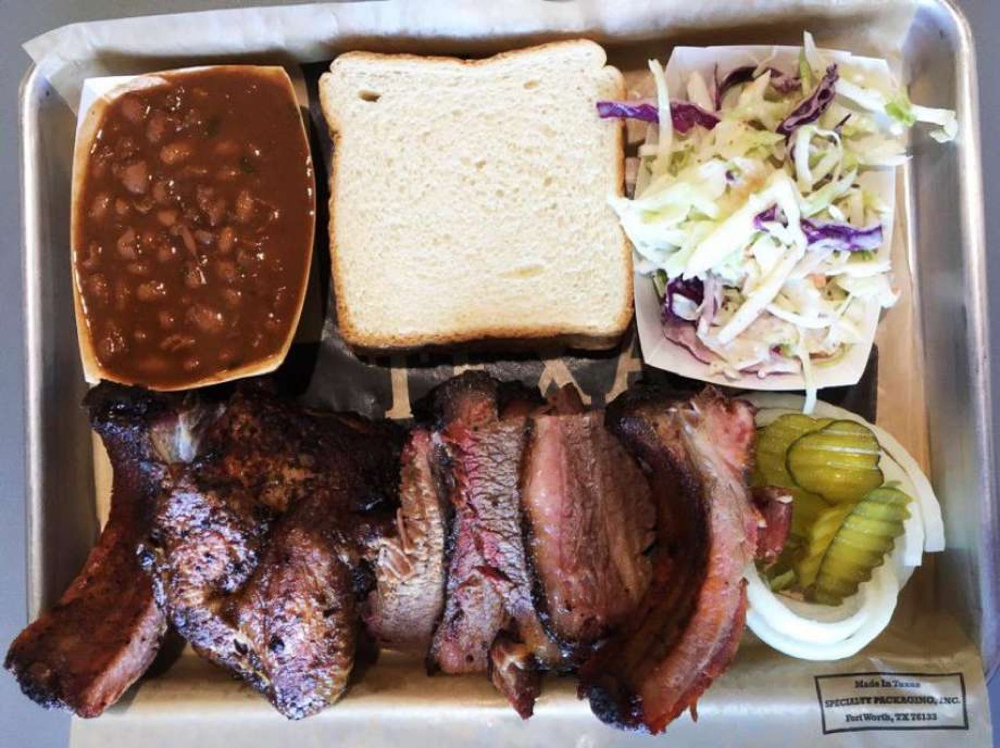

ITEM 1
Smoked meat plates
Brisket, sausage, chicken or baby back ribs with a choice of two sides.
Pit smoked BBQ · Wurzbach Rd, San Antonio
Brisket, sausage, chicken, pulled pork and ribs. Friendly owners, clean dining room.

Might not look like much from the road
Plates, sandwiches and the foot-long Brick.
Brisket, sausage, chicken or baby back ribs with a choice of two sides.

Smoked meat on a brioche bun, or the foot-long Brick with brisket, sausage and chopped pork.

Loaded nachos, loaded baked potatoes and loaded salads with your choice of smoked meat.


4.3 ★ · 465 Google reviews
Just tried this place for the first time - absolutely awesome and friendly service! The food was so good too, nice and hot! Nice, clean place, super friendly people and awesome food, can't go wrong! :)
Fantastical!! The owners were kind, helpful and friendly. The food was cooked to perfection. No excessive chewing, no meat being immediately stuck in my teeth and no ripping and tearing at it like a carnivore. Magnificent. I’ll be back and they better have that peach cobbler.
Might not look like much driving by but trust me you don’t wanna miss out on this BBQ . Everything was fresh you can tell from the photo. Super nice people to:) highly recommend. Cant wait to come back
Kitchen notes
Near the Medical Center, in a plain brick building with a hand-built wooden sign. Inside: metal tables and a clean, bright dining room.
Kind, helpful owners. Hot food. A clean place.

Pickup / dine in
8222 Wurzbach Rd, San Antonio, TX 78229
Open Monday to Saturday, closed Sunday. Call ahead if you want to be sure.